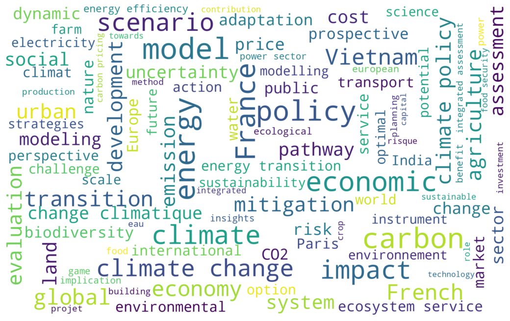

Bonjour !
Je suis Cirdi, votre documentaliste scientifique. Je dispose des travaux du Centre International de Recherche sur l'Environnement et le Développement (CIRED) sur les thèmes ci dessous. Je vais les analyser afin de vous proposer une synthèse avec liens directs en accès libre sur HAL pour en savoir plus 😉.
Je suis Cirdi, votre documentaliste scientifique. Je dispose des travaux du Centre International de Recherche sur l'Environnement et le Développement (CIRED) sur les thèmes ci dessous. Je vais les analyser afin de vous proposer une synthèse avec liens directs en accès libre sur HAL pour en savoir plus 😉.
Domaines d'expertise : Cirdi a indexé 1199 publications du CIRED
